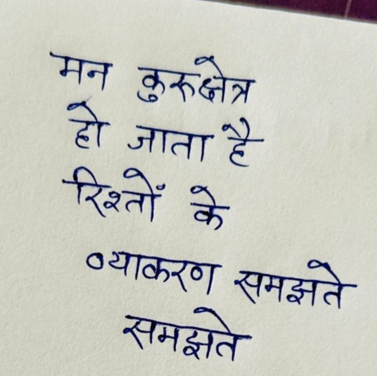

File: hin_sample_06.jpg

⏳ Pending Integration...
मन कुरुक्षेत्र हो जाता है रिश्तों के व्याकरण समझते समझते
## मन कुरुक्षेत्र हो जाता है रिश्तों के व्याकरण समझते समझते
मन कुरुक्षेत्र हो जाता है रिश्तों >याकरण समझति- समझते
नि noe Shin ow pe en tr re a iSoor iE Vers ५5 - Sa ee: ie ewe लय SOME OS CES Ra +े | कर Er Torore eee Peck mye apt ae he ps On 2 8 pare ESF RS हा कि 2 Py SU ty हाट iets wrt Fee Sa ee आआ Mage et AR ag 742, ry 5 TU etn an BREE ak SEIS a he pgs oe De Ey Na is ONE NO te Ta ih a nels A ns fae Coe YE r=] Be ea a पर क्षेत्र UEP OR Oy Bothy BE CYRUS pe Ds. USO NEE ce PPR ee Ed TSC LE PE } a आम 55 चना ता oe पल टी Orns ae mers VOLS Ket i mead Eset ee Oy ese a $e ee OG ees 7 ‘} Sn ST PY SO ६.८० AE OS तप or Carn ete UVES NOC AS. Oat ts wl a Ee ieee pee i ame oe me मोल NEE ८2 fied. RE की Ly SOLE etl 8 SOONG 8 Ny EE फिन हिल पा कक जन किए" ाई DORM 22207 सह a TY MOAR Ste at eh Tes नाना TS Phe ey EU कहा कई a ag EEL EMD Te ला wt a eee er to 52 पा 2 जाता Eee ot कर, सी आम rr a ote tothe Te Ph eS Ty Sonne EE AY a. EO Ge ॥ हा i GRRE ed Bag LE os बी IN as Ta aes पाया kp tere Uh SURES Wee २. Pec JO os eee DO a PS A ee ny ee res a Seed Te [EC Psi eee ee F aan OS es eT Vg Bee COP Pe Gs RSA ie fea ES pe og ee OE YP bOI OT EE ES a RATED on CET =~ ed ey ORES ey a os Set 25 en EN: pt PON te Ae हक DEE eat pers be To an eee oe Baltes Cree nnn hit 2 ARE PES ta Pip bef pe ed है. MN ee te ta een eg he 5 ee ES te SE ann ey Xi STEARATE A lS Rene a > कि पद een en 2 हर मय ar 2-० oe. a 7६०४ ५६%: Dede Nag ५ तल जप उलट A 5 ree dee Oba? ८४५४ CR GOR Ot किए a: पर 5 ६०] हक | agar ck eae आज, sy a vega we. - we ay tte A 3 Be RENEE ५ Ba a Bo हि कह, | ४०) 77 ६१. Se CA Oh 4 | Binge Bate te A gh et ned irae et atte bn iayl eS Cen 2 meng ee HE oe Ny Jorg Ps Writer mas pee Rye ee ee Ben ad tt ee PS EET PERE. APTS. Rue eat ee या ea ७6-६5 ae ly eae च्छा FP eh de ne et की 5 2००२० ०५ हल पक तप PEG PENAL PE IAD ae CL iy eae । fey ee ad a 55 0 ८-2 & ar Ts Se Rae TAS LTS ee ee eer ELE ER ta ON OEE gs Sn i ne न पट: 7, ee Bb ec RU ५7722 दया 72: 70 5 77 जज या व EEE oa ee le Sy ASE; ty ato जाकर hs wees Lae Yavin ee hee aan sett eee हे ८ ७. wep tg hes tls Cs Sip Un Tie eee Cad Hae 7 =e Viet «४ २७२ a कै, आज जी Oe Creer, बा eS er गा, बाय ea as Me a. pM NS STE OANA AP os पार, SEE ee 5० /०४० 5 5 OTIC SeT ee? 3,/ 3, ५ 4 | Se 6a me Rens ८2 UMN Bade Prop ett ey ee Oi. 64 OR Rerves eH eet pst हर हरा 27 te oye gh) te wpe iA ९४३ Od 59७ Ei ree e ey won eet he ey Race ES, aoa Lars aig Pe SE fee ree Pe आफ TE पक 7 सी 72 SEA रेप 3 baw ROS हल पट जे, Bal हल ak ay Ce ENA A On tage EEN, ae a की ७७ Caer Cote ed © Meds ele AES LEE ELE ES Peer INS & ' i Ca Keer Fe Gh ee 3:22 2५७ TE Ee, rife Ty रे "गे ee te जो Beers ft Lotte ee ES BES hey बचा GE ENG DR OE ० ny eae es Wey 3 RTE, BONE ee tee oP Sa eon ey, Pete el is Sa ae Cali; है ८7 IN : AE ae fe he ee Ea oe aoe O35 ४ Ze: pee AEN 27८ ०.५ ४ 2८. *ै धार हट हू DIRT अमल N ANTE पक ON है > are FT Yar et 0 en ca oe OR EERE UE NES Pe eS ieee ENE gee Te 0 EE ee TE GEE CEN ee [ere Seg te 0, ०7225... हु: SPE OR UNG Sita, GAG isa phe UC) OD Ee hihi पक 2 शत 7 CEN EO PN /7 0 Gy नर शशि rrr ens 220८, ४८% ही पट की 270 er uO rt OE A by फ: Ye a BOE Aa Me 2 27:27 2 ee ४३ ४2. BERIT दा पड पर. खा पे OR Ee ees 772 MO ag pp Pe BT Gt Se
मन कुरक्षेत्र हा जाता सनझत
❌ OCR Failed
ई-एन्त्रा
ई १ गीता है रिश्लों प्याकरण् शनज ई मझते
मन त गिड हो जाता तादटे रिश्तों गं केे के ब्याकर नकरष समझ